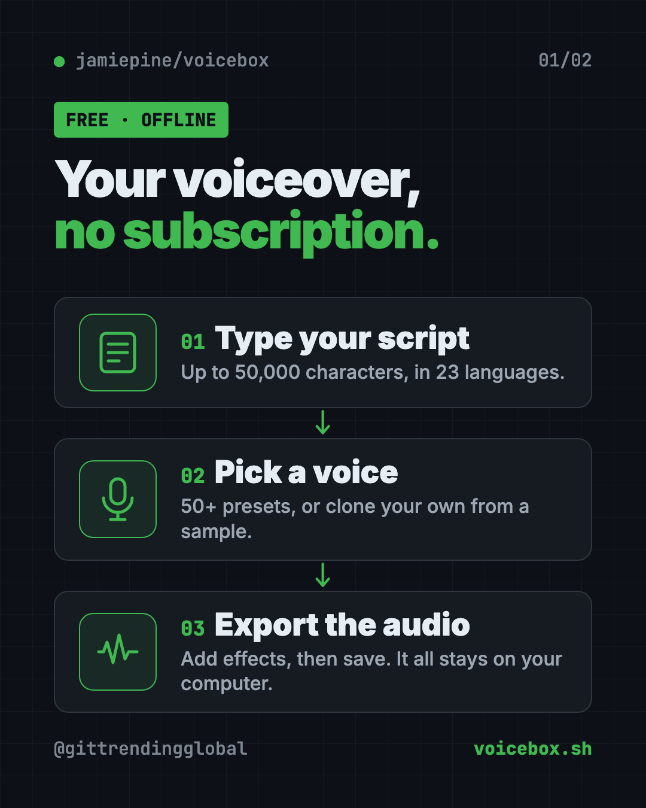
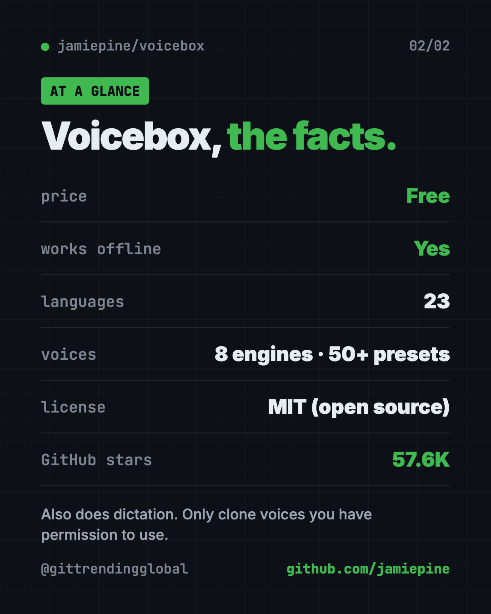

Voicebox: Free AI Voice Generator That Runs Offline
Voicebox is a free AI voice generator that runs on your computer. Make voiceovers in 23 languages, clone your own voice and dictate into any app.
Voicebox is a free ai voice generator that runs on your own computer. Type a script and it reads it aloud in 23 languages, in a preset voice or a copy of your own.
It also works the other way: hold a key, talk, and your words get typed for you. This guide covers what it does, who it's for, and how to install it.
Key takeaways
- Free and open source. MIT license, about 57.6K GitHub stars. The README promises no splash screens or banners in the app.
- Private. The README says models, voice data and recordings never leave your machine.
- Two jobs in one app. Text to speech, plus speech to text (dictation).
- Lots of voices. 8 voice engines, 50+ preset voices and 23 languages.
- Mac and Windows downloads. Linux users build it themselves for now.
What is Voicebox?
AI voices are everywhere. Creators use them for voiceovers, teachers for lessons, small shops for ads. But the popular tools charge monthly and upload your recordings to their servers.
Voicebox calls itself a "local-first AI voice studio." Local-first means it runs on your computer, not in the cloud. The README pitches it as a free, open-source alternative to ElevenLabs (paid AI voices) and WisprFlow (paid dictation), in one app.
It's made by developer Jamie Pine and shared on GitHub.
What can this free AI voice generator do?
Here's what the README lists:
- Read any text aloud. Scripts, articles, whole chapters. It splits long text and stitches it back smoothly, up to 50,000 characters.
- Clone a voice. Make a voice from a few seconds of sample audio.
- Use preset voices. 50+ ready-made voices if you'd rather not clone anything.
- Describe a voice in words. One engine builds a voice from a written description.
- Add feeling. With the Chatterbox Turbo engine, tags like
[laugh],[sigh]or[whispering]change the delivery. - Add effects. Pitch shift, reverb, echo and presets like "Radio" and "Robotic."
- Build stories. A multi-track timeline for podcasts and conversations with several voices.
- Dictate anywhere. Hold a hotkey, speak, release. On a Mac, the text pastes into whatever box you're typing in.

How to use Voicebox (real examples)
- Voice a YouTube video. Paste your script, pick a preset voice, add a touch of reverb and export.
- Make a two-person podcast. Use the Stories editor to put two voices on a timeline and trim the lines.
- Read lessons in many languages. Teachers can turn one script into audio in Hindi, Arabic, Japanese, Swahili and more.
- Reply to emails by voice. Hold the hotkey, talk, and Voicebox types your words. It can clean out the "ums" first.
- Give your AI helper a voice. Connect it to Claude Code or Cursor, and the AI can say "Task done" out loud in a voice you pick.
💡 Tip: For a cloned voice, record a clean sample in a quiet room. The README says profiles can use several samples for better quality.
Who should use Voicebox?
- Creators and YouTubers who need voiceovers without a monthly bill.
- Podcasters building multi-voice episodes.
- Teachers and course makers who want lessons read in many languages.
- Writers and busy people who'd rather talk than type.
- Game and story makers who want character voices.
- People who struggle to speak in their own voice. The README lists speech help as one use.
Is Voicebox free?
Yes. Voicebox is free and open source under the MIT license. The README says it stays free with "no splash screens, banners, or interruptions in the app."
Everything runs on your computer, so there are no per-word or monthly AI fees. The cost is your computer's power. A newer Mac or a PC with a good graphics card will be faster.
Does Voicebox work offline?
Yes, once it's set up. The voice models run on your computer, and the README says your voice data and recordings never leave it.
You need the internet to download the app and the voice models the first time.
⚠️ Heads up: Only clone your own voice, or a voice you have clear permission to use. Copying someone's voice without asking can hurt people and may break the law where you live.
How to install Voicebox
The easiest way is to download the app from the Voicebox website or GitHub's Releases page:
| Your computer | What to download |
|---|---|
| Mac with Apple chip (M1 or newer) | The Apple Silicon DMG |
| Older Intel Mac | The Intel DMG |
| Windows | The MSI installer |
| Linux | No ready-made app yet. See voicebox.sh/linux-install to build it |
Then install it like any other app, open it, and let it download a voice model.
Prefer Docker (a free app that runs other apps in a sealed box)? Open Terminal. Copy and paste this:
git clone https://github.com/jamiepine/voicebox.git && cd voicebox
docker compose up
On a Mac, dictation needs two permissions: Accessibility and Input Monitoring. The app walks you through both on first run.

Connect Voicebox to Claude Code
Want Claude Code to talk to you? With Voicebox open, copy and paste this into your terminal:
claude mcp add voicebox \
--transport http \
--url http://127.0.0.1:17493/mcp \
--header "X-Voicebox-Client-Id: claude-code"
Let Claude or Codex set it up for you
Claude Code and OpenAI Codex are AI helpers that can run setup steps on your computer. You paste a request, they do the work, and you approve each step.
Copy and paste this:
Please help me install Voicebox from github.com/jamiepine/voicebox.
1. Check what computer I have (Mac with Apple chip, Intel Mac, Windows or Linux).
2. Tell me the right download from the README and where to get it.
3. If I'm on Linux, read voicebox.sh/linux-install and walk me through it.
4. Once it's open, help me make my first voiceover with a preset voice.
Then try asking:
Connect Voicebox to Claude Code with its MCP server so you can speak to me when a task is done.
Which Voicebox voice engine should I use for a Spanish voiceover, and why?
Help me set up the Voicebox dictation hotkey on my Mac and grant the permissions it needs.
Voicebox at a glance
| Price | Free |
| Works offline | Yes, after the first model download |
| Platforms | Mac, Windows; Linux by building it yourself |
| License | MIT |
| Languages | 23 |
| Voices | 8 engines, 50+ presets, plus voice cloning |
| Best for | Creators, teachers and anyone who wants private AI voices |
Our take
Voicebox packs a paid voice tool and a paid dictation tool into one free, private app. For creators on a budget, that's a big deal.
What we like:
- No subscription, no banners.
- Your voice and recordings stay on your computer.
- Huge choice: 8 engines, 50+ presets, 23 languages.
- The Stories timeline makes podcasts and dialogue easy.
- Dictation and AI-helper voices in the same app.
What to watch for:
- No ready-made Linux app yet.
- Speed depends on your computer. Older laptops will be slow.
- Emotion tags only work with one engine, Chatterbox Turbo.
- Voice cloning is powerful. Use it only with permission.
Like Voicebox? For simple, private voice typing, try Handy, a free offline voice typing app. Need to turn long recordings into text? Read our VibeVoice guide. Making videos too? See OpenCut, a free video editor.
FAQ
Is Voicebox a free alternative to ElevenLabs?
The README pitches it that way. It's free, open source, and makes AI speech and cloned voices on your own computer instead of in the cloud.
Does Voicebox work offline?
Yes. After you download the app and a voice model, it runs on your computer. The README says voice data never leaves your machine.
How many languages does Voicebox support?
Up to 23 languages, depending on the voice engine. Chatterbox Multilingual covers the most.
Can I use Voicebox for dictation?
Yes. Hold a hotkey, speak and release. On a Mac, your words paste into the text box you're using. It can also tidy up "ums" first.
Does Voicebox work on Linux?
Yes, but there's no ready-made Linux app yet. The README points to a build-from-source guide at voicebox.sh/linux-install. Docker is another option.
Is it legal to clone a voice with Voicebox?
Cloning your own voice is fine. For anyone else's voice, get clear permission first, and check the rules where you live.
Get Voicebox: github.com/jamiepine/voicebox
Follow @gittrendingglobal on Instagram for one free, useful tool every day.
📲 Watch the 30-second video on Instagram
Keep reading

PureMac: Free CleanMyMac Alternative, No Subscription
PureMac is a free CleanMyMac alternative. It clears junk, fully uninstalls apps and finds duplicates, with no subscription, no tracking and no scare tactics.

Recordly: Free Screen Recorder With Auto-Zoom (2026)
Recordly is a free screen recorder and editor for Mac, Windows and Linux. It adds auto-zooms, a smooth cursor, webcam bubbles and styled backgrounds.

OpenSEO: Free Semrush Alternative, Open Source (2026)
OpenSEO is a free Semrush alternative for keyword research, rank tracking and site audits. It's open source, and you pay only for the search data you use.